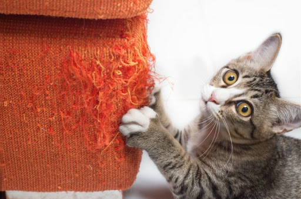
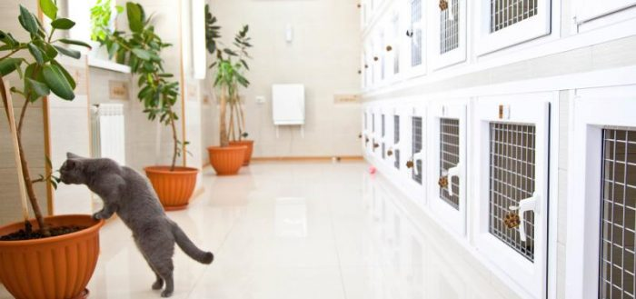

Когтеточка – настоящая находка для владельца, который не хочет идти против природы, лишая свою любимицу возможности заострять когти. Но стоит быть готовым к тому, что животное переключит свое внимание на новый непонятный предмет, коим ей будет казаться когтеточка, не сразу.
Характеристики:
Характеристики:

Добро пожаловать в нашу гостиницу для кошек «Экотель» в Киеве. Это первый специализированный отель для кошек в Киеве. Здесь мы создали самые лучшие условия для котиков, оборудовав каждый номер. Великолепный сервис, высококачественное питание, идеальная чистота, а так же любовь и забота наших внимательных котонянь — все это залог прекрасного пребывания вашего кота или кошки в нашем отеле.
В нашей гостинице вашему питомцу будет комфортно! Потому что: